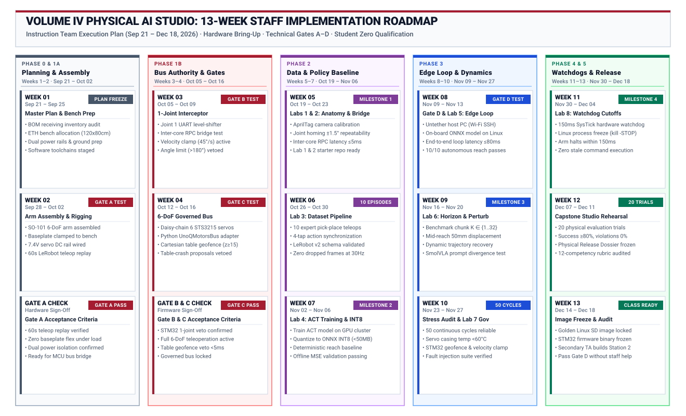
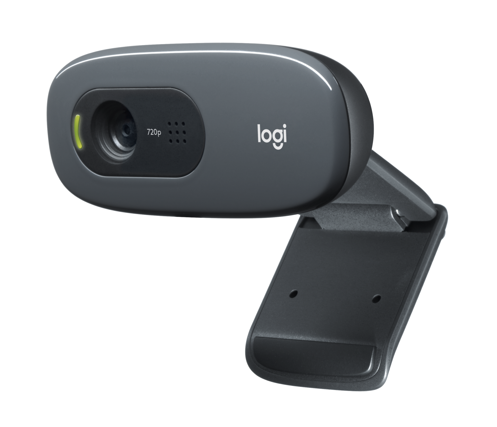

Volume IV Physical AI Studio: Staff Implementation Master Plan
Comprehensive 13-Week Execution Roadmap (September 21 – December 18, 2026)
Target Audience: Postdoctoral Researcher (Andrea, ETH Zurich) & Course Instruction Staff Course Lead: Prof. Vijay Janapa Reddi Target Semester: Spring 2027 Studio Launch Target Hardware: Arduino UNO Q (Qualcomm QRB2210 Linux + STM32U585 MCU) · Seeed Studio SO-101 6-DoF Follower Arm · Hugging Face LeRobot · SmolVLA & ACT Core Reference Architecture: Master Landing Page · Course Syllabus · Pre-Flight Guide · 12-Competency Matrix
1. Executive Summary & Operational Mandate
This master plan governs the 13-week physical implementation, hardware bring-up, and pedagogical qualification period between Monday, September 21, 2026, and Friday, December 18, 2026.
To ensure every student station operates flawlessly when the studio launches in Spring 2027, the instruction team acts as Student Zero. Before any student touches the bench, staff personally unboxes, mounts, wires, programs, and qualifies every single component, lab brief, and automated test.
The defining intellectual contribution of the Volume IV studio is teaching students to navigate the fundamental asymmetry of Physical AI: 1. The Cognitive Brain (Qualcomm QRB2210 Linux MPU): High-capacity, probabilistic foundation neural policies (SmolVLA, ACT) that ingest sensory camera streams (\(I_t\)) and propose multi-step action trajectory chunks (\(a_{\text{req}}\)). 2. The Safety Governor (STM32U585 Real-Time MCU): Deterministic, hard real-time safety invariants (velocity saturation clamping \(\omega_i \le 45^\circ/\text{s}\), geometric table geofencing \(z_{\text{tool}} \ge 15\text{ mm}\), and \(150\text{ ms}\) communication watchdogs) that arbitrate, permit, or veto proposals (\(a_{\text{enf}}\)) before they reach physical motor coils (\(a_{\text{meas}}\)).
Students do not merely train models in isolation or write bare-metal motor drivers; they build, measure, and defend the Causal Permission Boundary connecting the two brains over an internal RPC bridge with zero unmonitored host bypass.

The primary objectives for this 13-week execution window: 1. Week 1 Planning & Bench Preparation: Finalize the master curriculum plan, audit the Bill of Materials (BOM), allocate dedicated workbench space at ETH Zurich, and verify electrical power rails before unboxing. 2. Hardware Bring-Up & Gate Qualification: Assemble, wire, verify, and qualify one complete Golden Reference Station, passing the Four Technical Go/No-Go Gate Tests (Gates A–D). 3. End-to-End Curriculum Qualification: Execute all 8 Hands-On Student Labs from scratch, producing verified golden artifacts, starter scripts, reference datasets, and calibration profiles. 4. Software & Firmware Freeze: Compile and lock the Golden Qualcomm Linux Image and STM32 Firmware Binary. 5. Independent Replication Audit: Have a secondary researcher or teaching assistant build Station 2 from scratch using only the staff documentation to ensure seamless class deployment.
2. Master 13-Week Execution Roadmap
The 13-week schedule is organized into six logical phases across five sprints, shifting physical assembly into Week 2 to allow Week 1 to focus entirely on architecture alignment, BOM audit, and bench preparation:

3. Physical Hardware Stack & Bench Architecture
The studio relies on an open, modular, and safety-hardened hardware stack designed specifically for edge Physical AI.
Physical AI Hardware Platform Overview
| Component Image | System Pillar & Hardware | Key Technical Specifications | Core Function in Studio |
|---|---|---|---|
 |
Dual-Silicon ComputeArduino UNO Q |
• Qualcomm QRB2210 Linux Application MPU (Debian) • STM32U585 Real-Time Microcontroller (160 MHz ARM Cortex-M33) • OpenAMP RPMsg shared-SRAM inter-core bridge • Dedicated 45W USB-PD logic power |
Runs Hugging Face LeRobot and SmolVLA/ACT neural policies on Linux; delegates physical motor bounds and safety governance to STM32. |
 |
Manipulator PlantSeeed Studio SO-101 Pro |
• 6-DoF open-source follower arm linkage • Rigid benchtop clamp mount (zero tip under load) • Parallel-jaw gripper end-effector • \(300 \times 200\text{ mm}\) marked manipulation workspace |
Provides the physical body for imitation learning, human teleoperation demonstration recording, and autonomous block reach. |
 |
Smart Serial ActuatorFeetech STS3215 Bus Servo |
• 19 kg·cm stall torque at 7.4V • 12-bit contactless magnetic angle encoder • 1 Mbps half-duplex UART daisy-chain protocol • Real-time angular position and load telemetry readback |
Translates commanded joint action chunks (\(a_{\text{enf}}\)) into calibrated physical motion and returns measured angles (\(a_{\text{meas}}\)). |
 |
Vision SensorLogitech C270 HD Webcam |
• 720p 30 Hz RGB video ingestion via Linux V4L2 • Mounted 40 cm overhead at 45° oblique perspective • AprilTag 36h11 extrinsic calibration target • Locked exposure and white balance to avoid visual drift |
Ingests sensory frames \(o_t \in \mathbb{R}^{3 \times 224 \times 224}\) for closed-loop visual feedback and dynamic disturbance recovery. |
Complete Bench Rigging & Electrical Bus Interface
Before assembling the physical arm or connecting motor power, review the electrical wiring schematic. The architecture uses clean galvanic separation between digital computing logic and high-current actuator power:

To ensure bulletproof reliability and avoid mysterious CPU brownout resets: * Digital Logic Power: The Arduino UNO Q and USB camera are powered exclusively through the USB-C port via the 45W USB-PD adapter. * Actuator Power: The 6× STS3215 smart servos are powered by an independent, regulated 7.4V / 5A DC bench power supply connected directly to the servo bus rail. * Common Ground Reference: The DC motor power supply ground and Arduino UNO Q ground are connected together into a solid star-ground reference. Motor current NEVER passes through board headers. * Safety Invariant: Software faults, servo stalls, or power cuts on the motor rail will never reset the Qualcomm Linux processor or disrupt telemetry logging.
4. Sprint-by-Sprint Weekly Implementation Breakdown
Sprint 0: Architecture Alignment & Bench Preparation (Week 1)
Focus: Curriculum plan finalization, Bill of Materials audit, dedicated bench allocation, and electrical power verification.
Week 1 (Sep 21 – Sep 25, 2026): Master Plan Alignment & Bench Preparation
- Primary Objective: Finalize the master execution plan, complete the BOM inventory, allocate the physical workbench, and verify laboratory power systems.
- Tasks:
- Weekly Deliverable: Finalized master checklist, verified hardware inventory audit, workbench setup ready for assembly, and electrical schematic verification.
Sprint 1: Mechanical Bring-Up & Gate Tests A–C (Weeks 2–4)
Focus: Mechanical assembly, electrical isolation, and establishing the governed servo bus path.
Week 2 (Sep 28 – Oct 2, 2026): Hardware Bring-Up, Arm Assembly & Gate A
- Primary Objective: Assemble the physical arm, establish power safety isolation, and achieve native teleoperation.
- Tasks:
- Weekly Deliverable: Video proof of Gate A teleoperation + voltage rail multimeter verification.
Week 3 (Oct 5 – Oct 9, 2026): Inter-Core Bridge Wiring & Gate B (1-Joint Interceptor)
- Primary Objective: Route servo communication through the STM32 and prove real-time command veto.
- Tasks:
- Weekly Deliverable: Telemetry log showing MCU clamping and rejection of out-of-bounds joint commands.
Week 4 (Oct 12 – Oct 16, 2026): Full 6-DoF Governed Arm & Gate C
- Primary Objective: Scale the governed bus to all 6 joints and achieve full LeRobot teleoperation under MCU control.
- Tasks:
- Weekly Deliverable:
UnoQMotorsBus.pysource code + demonstration of live table-crash veto.
Sprint 2: Sensing, Data Collection & Policy Baseline (Weeks 5–7)
Focus: Sensor calibration, human demonstration recording, and baseline imitation policy training.
Week 5 (Oct 19 – Oct 23, 2026): “Student Zero” Run for Labs 1 & 2
- Primary Objective: Qualify Lab 1 (Causal Boundary) and Lab 2 (Sensing & Bridge).
- Tasks:
- Weekly Deliverable: Milestone 1 qualification package (Lab 1 & 2 starter repo + reference calibration card).
Week 6 (Oct 26 – Oct 30, 2026): “Student Zero” Run for Lab 3 (Teleoperation & Datasets)
- Primary Objective: Record golden demonstration dataset in standardized LeRobot v2 schema.
- Tasks:
- Weekly Deliverable: Published 10-episode reference dataset with complete dataset card and inspection plots.
Week 7 (Nov 2 – Nov 6, 2026): “Student Zero” Run for Lab 4 & Milestone 2
- Primary Objective: Train baseline ACT policy, quantize to ONNX INT8, and build heuristic baseline.
- Tasks:
- Weekly Deliverable: Milestone 2 qualification package (trained checkpoint + offline MSE evaluation curves).
Sprint 3: Untethered Edge Deployment & Dynamic Adaptation (Weeks 8–10)
Focus: Natively running neural policies on Qualcomm Linux, action chunk horizons, and closed-loop disturbance recovery.
Week 8 (Nov 9 – Nov 13, 2026): Gate D & Lab 5 (Untethered Autonomous Reach)
- Primary Objective: Run closed-loop visual reach completely untethered on the Arduino UNO Q.
- Tasks:
- Weekly Deliverable: Gate D verification report + multi-tap telemetry CSV of untethered reach.
Week 9 (Nov 16 – Nov 20, 2026): “Student Zero” Run for Lab 6 (Action Horizons & Disturbances)
- Primary Objective: Evaluate action chunk horizons and closed-loop disturbance recovery.
- Tasks:
- Weekly Deliverable: Milestone 3 qualification package (horizon comparison plots + disturbance recovery video).
Week 10 (Nov 23 – Nov 27, 2026): Mid-Term Rig Reliability & “Student Zero” Run for Lab 7 (MCU Safety Governor)
- Primary Objective: Conduct continuous stress testing and program the real-time STM32 safety governor.
- Tasks:
- Weekly Deliverable: 50-cycle reliability & thermal profile report + Lab 7 qualification package (firmware source + live veto audit).
Sprint 4: Real-Time Governance & Fault Hardening (Week 11)
Focus: Active microcontroller safety gating, hardware watchdogs, and zero-backlog recovery.
Week 11 (Nov 30 – Dec 4, 2026): “Student Zero” Run for Lab 8 & Milestone 4
- Primary Objective: Hardware watchdog timeout and fail-safe cutoff under system crash.
- Tasks:
- Weekly Deliverable: Milestone 4 complete qualification package (watchdog timing trace + zero-backlog proof).
Sprint 5: Capstone Rehearsal & Class-Set Duplication (Weeks 12–13)
Focus: Capstone defense simulation, golden disk image freeze, and independent bench replication.
Week 12 (Dec 7 – Dec 11, 2026): Capstone Rehearsal & 20-Trial Release Protocol
- Primary Objective: Simulate the final Capstone Milestone 5 defense protocol.
- Tasks:
- Weekly Deliverable: Reference Capstone Physical Release Dossier + 20-trial unedited video archive.
Week 13 (Dec 14 – Dec 18, 2026): Golden Image Freeze & Independent Replication Audit
- Primary Objective: Freeze software images and have a second staff member replicate Station 2 from scratch.
- Tasks:
- Weekly Deliverable: Golden
.imgfile uploaded to lab server + signed Replication Audit Report.
5. Master Deliverables & Weekly Technical Sign-Off Checklist
| Week & Date Range | Milestone / Sprint Phase | Primary Physical AI Deliverables | Hardware Verification & Acceptance Criteria | Status |
|---|---|---|---|---|
| W01: Sep 21 – Sep 25 | Master Plan & Prep | • Complete curriculum review & syllabus freeze • BOM inventory & receiving audit • Dedicated bench allocation & power rail check |
Multimeter confirmation of 7.4V DC & 45W USB-PD rails; complete toolchain staged | [ ] |
| W02: Sep 28 – Oct 02 | Hardware Bring-Up | • Mechanical arm assembled & clamped • 7.4V motor power harness verified • Gate A: LeRobot USB teleoperation passing |
60-second teleoperation replay executed without communication dropout | [ ] |
| W03: Oct 05 – Oct 09 | Bus Authority | • STM32 UART level-shifter circuit wired • Inter-core RPC bridge test script • Gate B: 1-joint velocity clamp & veto |
Joint 1 clamped at \(45^\circ/\text{s}\); out-of-range targets (\(> 180^\circ\)) rejected | [ ] |
| W04: Oct 12 – Oct 16 | 6-DoF Integration | • UnoQMotorsBus Python adapter deployed• Table geofence (\(z \ge 15\text{ mm}\)) programmed • Gate C: Governed 6-DoF teleoperation |
Full 6-DoF teleoperation functional; downward table crash actively vetoed | [ ] |
| W05: Oct 19 – Oct 23 | Milestone 1: Anatomy | • Lab 1 (Boundary) qualified by Student Zero • Lab 2 (Sensing & Bridge) qualified • AprilTag camera & joint offset calibration |
Joint repeatability \(\pm 1.5^\circ\); inter-core bridge round-trip \(\le 5\text{ ms}\) at \(50\text{ Hz}\) | [ ] |
| W06: Oct 26 – Oct 30 | Dataset Pipeline | • Lab 3 (Teleoperation) qualified • 10-episode pick-and-place reference dataset • Standardized LeRobot v2 schema validated |
Zero dropped frames at \(30\text{ Hz}\); all 4 action taps synchronized | [ ] |
| W07: Nov 02 – Nov 06 | Milestone 2: Training | • Lab 4 (Baseline & Export) qualified • ACT model trained on workstation GPU • Quantized ONNX INT8 policy exported (\(< 50\text{ MB}\)) |
Offline MSE validation curves clean; model file size \(< 50\text{ MB}\) | [ ] |
| W08: Nov 09 – Nov 13 | Edge Inference | • Gate D: Untethered reach on Qualcomm Linux • End-to-end loop latency \(T_{\text{total}} \le 80\text{ ms}\) • Lab 5 (Autonomous Reach) qualified |
Host PC tether disconnected; 10/10 autonomous reach completions | [ ] |
| W09: Nov 16 – Nov 20 | Milestone 3: Dynamics | • Lab 6 (Action Horizons) qualified • Horizon benchmark curves (\(K=1..32\)) • Disturbance recovery mid-trajectory verified |
Measurable trajectory adaptation under \(50\text{ mm}\) block displacement | [ ] |
| W10: Nov 23 – Nov 27 | Stress & Governor | • 50-cycle continuous autonomous reliability test • Servo thermal profiling (\(< 60^\circ\text{C}\)) • Lab 7 (Safety Governor) qualified |
Servo casing \(< 60^\circ\text{C}\); live table-crash proposals vetoed in \(< 5\text{ ms}\) | [ ] |
| W11: Nov 30 – Dec 04 | Milestone 4: Cutoffs | • Lab 8 (Watchdog Cutoffs) qualified • \(150\text{ ms}\) hardware SysTick watchdog verified • Linux process freeze & zero backlog proved |
Arm halts in \(\le 150\text{ ms}\) upon heartbeat loss; zero stale commands on resume | [ ] |
| W12: Dec 07 – Dec 11 | Capstone Rehearsal | • Capstone Studio protocol simulated • 20 witnessed physical trials executed • Claim-Argument-Evidence dossier template |
\(\ge 80\%\) task success rate across 20 trials with zero safety violations | [ ] |
| W13: Dec 14 – Dec 18 | Final Release Freeze | • Golden Linux SD card image compiled • STM32 baseline binary locked • Secondary TA replication test completed |
Independent replication on Station 2 passes Gate D without staff intervention | [ ] |
6. Weekly Execution & Reporting Protocol
To ensure rapid resolution of hardware bugs and maintain transparent progress toward the December deadline:
- Weekly Friday Check-In (Every Friday by 17:00 CET):
- Submit a structured weekly update via GitHub Issue / PR containing:
- Status:
[ON TRACK]/[DELAYED]/[BLOCKED] - Completed Tasks: Checkboxes matching the weekly sprint table above.
- Evidence Links: Commit hash, telemetry CSV, model evaluation curve, or uncut video clip.
- Active Blockers: Detailed diagnostic logs of any hardware/timing failure.
- Status:
- Submit a structured weekly update via GitHub Issue / PR containing:
- Bi-Weekly Physical Sync:
- 30-minute bench review demonstrating the gate tests and milestone deliverables on live hardware.
- Escalation Trigger:
- If any Gate Test (A, B, C, or D) is delayed by more than 4 business days, activate the pre-approved fallback matrix in
feasibility-plan.mdimmediately.
- If any Gate Test (A, B, C, or D) is delayed by more than 4 business days, activate the pre-approved fallback matrix in